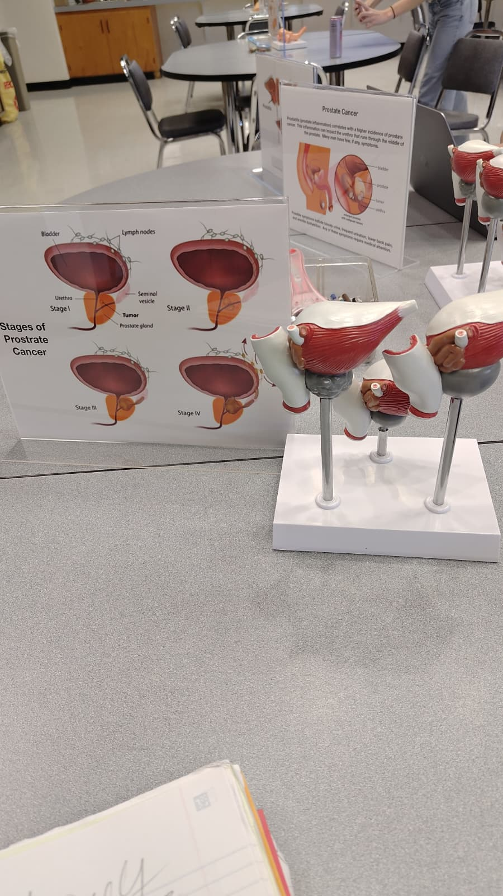
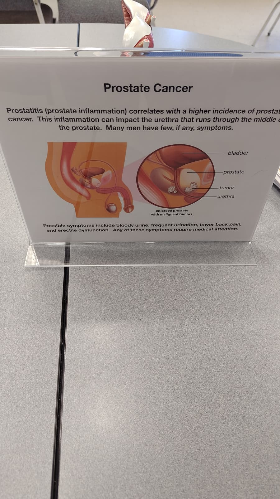
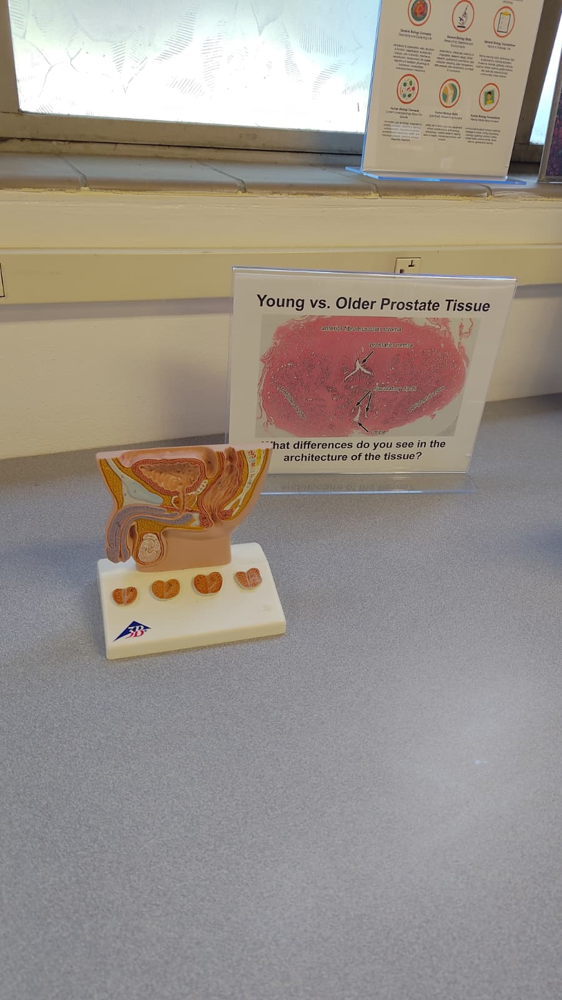
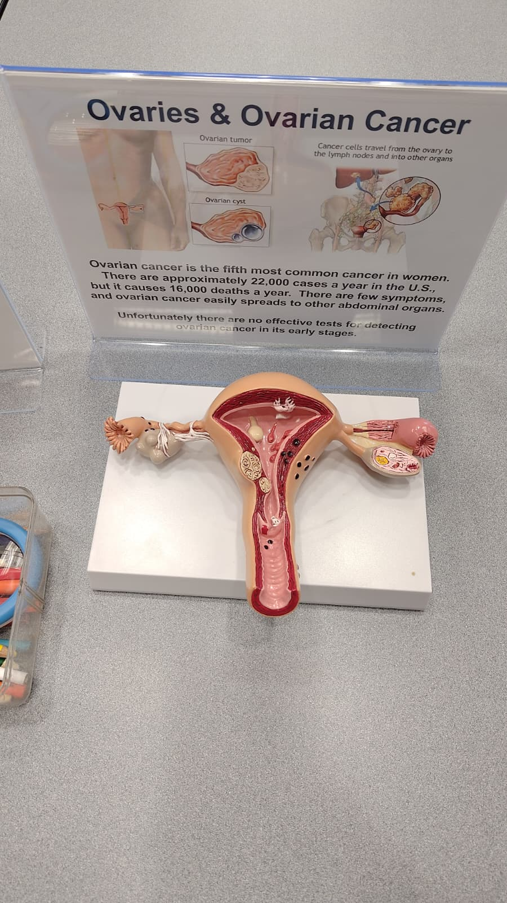
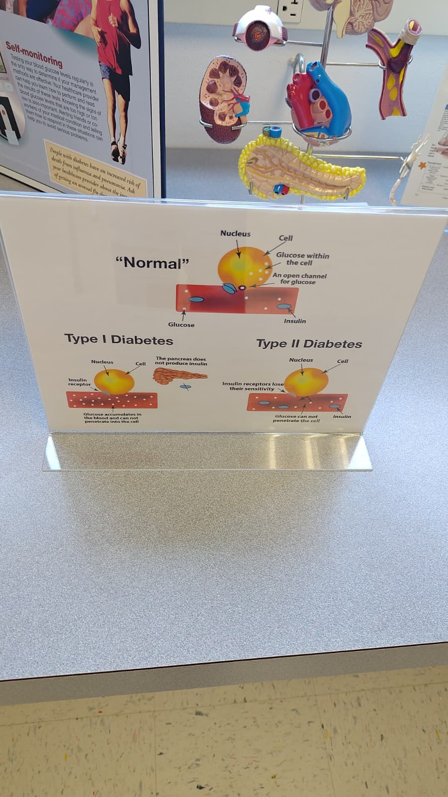
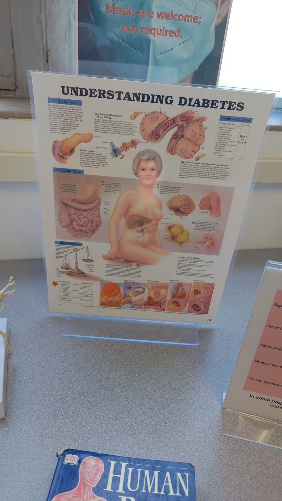
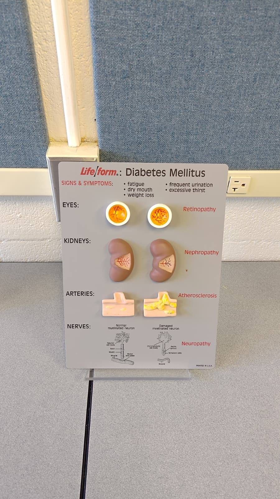
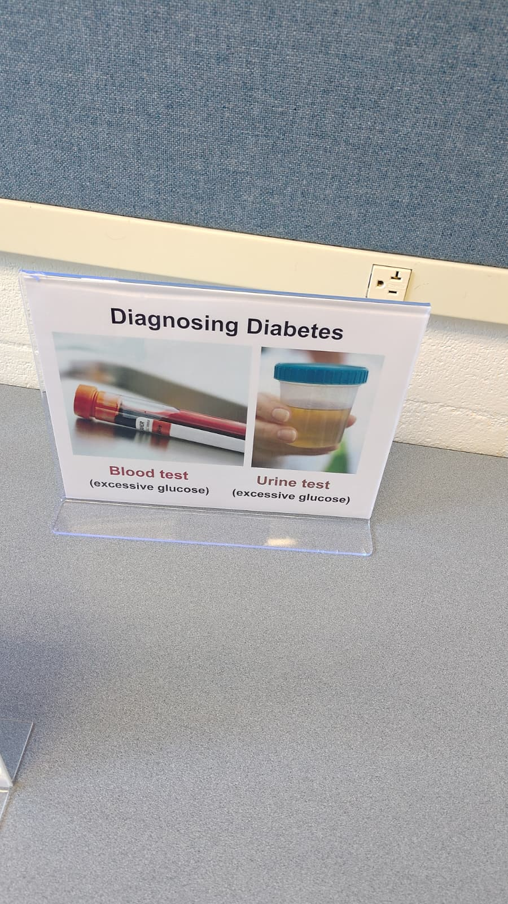

Cancers of Reproductive Organs
Cancer happens when cells grow and divide in an uncontrolled way, ignoring the normal signals that regulate cell division and apoptosis. Reproductive organ cancers are among the most common cancers worldwide. Four examples are covered below, each with where it occurs in the body, how it is detected, and general treatment approaches.
Prostate Cancer
Male reproductive system


The prostate is a walnut-sized gland that sits directly below the bladder and surrounds the urethra. Tumors form in the glandular tissue of the prostate and can compress the urethra as they grow. Many men have no symptoms until the cancer is more advanced.
- PSA (prostate-specific antigen) blood test
- Digital rectal exam (DRE)
- MRI or ultrasound imaging
- Biopsy to confirm malignancy
- Active surveillance for slow-growing cases
- Surgery to remove the prostate (prostatectomy)
- Radiation therapy
- Hormone therapy to reduce testosterone
- Chemotherapy for advanced stages
Ovarian Cancer
Female reproductive system
Ovarian cancer begins in the ovaries, the two organs in the female reproductive system that produce eggs and hormones. It is the fifth most common cancer in women and causes around 16,000 deaths per year in the U.S. It spreads easily to other abdominal organs through the lymphatic system.
- No reliable early-detection test exists
- CA-125 blood test (a tumor marker, not definitive)
- Transvaginal ultrasound
- Biopsy or surgical exploration to confirm
- Often diagnosed at a late stage because early symptoms are vague
- Surgery to remove ovaries, uterus, and affected tissue
- Chemotherapy, usually after surgery
- Targeted therapy for certain genetic types (BRCA mutations)
Cervical Cancer
Female reproductive systemCervical cancer starts in the cervix, the narrow lower portion of the uterus that connects to the vagina. Nearly all cases are caused by persistent infection with human papillomavirus (HPV), a sexually transmitted virus. It is one of the most preventable cancers because of available vaccines and screening tools.
- Pap smear to detect abnormal or precancerous cells
- HPV DNA test
- Colposcopy and biopsy if abnormal cells are found
- Routine screening is highly effective at catching it early
- Cone biopsy or LEEP procedure for early-stage precancerous cells
- Hysterectomy for localized cancer
- Radiation and chemotherapy for advanced stages
- HPV vaccination (Gardasil) prevents the most cancer-causing strains
Breast Cancer
Breast tissueBreast cancer develops in the cells of the breast, most commonly in the ducts that carry milk or the lobules that produce it. It is the most commonly diagnosed cancer in women and can also occur in men. The cancer can spread (metastasize) to lymph nodes under the arm first, then to other organs.
- Mammogram (X-ray of breast tissue), recommended regularly after age 40
- Breast self-examination and clinical breast exam
- Ultrasound or MRI for high-risk patients or dense breast tissue
- Core needle biopsy to confirm malignancy
- Genetic testing for BRCA1/BRCA2 mutations in high-risk individuals
- Lumpectomy (removal of tumor) or mastectomy (removal of breast)
- Radiation therapy after surgery
- Chemotherapy before or after surgery
- Hormone therapy for hormone-receptor-positive cancers
- Targeted therapy (e.g., Herceptin for HER2-positive cancers)
Diabetes Types I, II, and Gestational
Diabetes is a group of diseases that affect how the body uses glucose (blood sugar). All types involve problems with insulin, the hormone that allows cells to take in glucose for energy. The three main forms are Type I, Type II, and gestational diabetes, and they differ in cause, onset, and management.


Distinguishing the Three Types
| Type | Cause | Onset | Insulin Status | Management |
|---|---|---|---|---|
| Type I | Autoimmune: immune system destroys insulin-producing beta cells in the pancreas | Usually childhood or young adulthood | Little to no insulin produced | Daily insulin injections or pump; no cure |
| Type II | Cells become resistant to insulin; pancreas may eventually produce less | Usually adults, but increasing in younger people | Insulin produced but not used effectively | Diet, exercise, oral medication (metformin), sometimes insulin |
| Gestational | Pregnancy hormones cause temporary insulin resistance | During pregnancy, usually second trimester | Insulin produced but blocked by hormones | Diet, exercise, sometimes insulin; usually resolves after birth |
Risk Factors
- Type I: Family history and genetic markers are the main risk factors. Environmental triggers (like certain viral infections) may also play a role, though the exact cause is not fully understood.
- Type II: Obesity or being overweight, physical inactivity, family history, age (risk increases after 45), high blood pressure, and certain ethnic backgrounds (higher rates in Hispanic, Black, Asian, and Native American populations).
- Gestational: Obesity before pregnancy, previous gestational diabetes, family history of Type II, and being older during pregnancy all increase risk. Having gestational diabetes also raises lifetime risk of developing Type II.
How Diabetes Affects the Body


Eyes — Retinopathy
Chronically high blood sugar damages the tiny blood vessels in the retina. The vessels can leak or grow abnormally, eventually impairing or destroying vision. It is a leading cause of blindness in adults.
Kidneys — Nephropathy
The kidneys filter blood through a dense network of small blood vessels. Diabetes damages that network over time, reducing filtering ability. Left untreated, this progresses to kidney failure requiring dialysis or a transplant.
Arteries — Atherosclerosis
High glucose accelerates the buildup of fatty plaques inside artery walls, narrowing and hardening them. This raises the risk of heart attack and stroke significantly. People with diabetes are two to four times more likely to develop heart disease.
Nerves — Neuropathy
Damaged blood vessels starve nerves of oxygen and nutrients. The result is numbness, tingling, or burning pain, usually starting in the feet and hands. Severe neuropathy can lead to ulcers and infections that do not heal, sometimes requiring amputation.
Science Information Sources
Primary vs. Secondary Sources
Original research reported directly by the scientists who conducted it. This includes peer-reviewed journal articles, preprints, clinical trial reports, and dissertations. You get the raw data and methodology firsthand.
- Full data and statistical analysis are included
- You can evaluate the methodology yourself
- No layer of interpretation between you and the findings
- Can be very technical and dense
An interpretation, summary, or analysis of primary sources written by someone other than the original researchers. This includes news articles, review papers, textbooks, health websites, and documentary coverage.
- Written in accessible language for a broader audience
- Synthesizes multiple studies into a bigger picture
- Faster to read and easier to understand
- Always filtered through the writer's framing
Example Sources
Both sources below connect to the theme of biohacking and DIY biology. One is a secondary source (science journalism) and one is a primary source (original research).
Biohacking Summit Prague: Zažij budoucnost zdraví
A news article covering the international Biohacking Summit held in Prague, exploring the growing movement of health optimization, longevity science, cognitive enhancement, personalized medicine, and wearable technology. The piece reports on the summit's content for a general audience rather than conducting original research.
An Open-Source, Programmable Pneumatic Setup for Operation and Automated Control of Single- and Multi-Layer Microfluidic Devices
A research preprint presenting original work on building an open-source hardware and software system to control complex microfluidic lab devices at a fraction of the commercial cost. The paper includes full methods, design files, and code, embodying the DIY and biohacking ethos of making lab tools more accessible. This is original research, not a summary of someone else's work.
How to Scan a Scientific Paper
You do not read a research paper the way you read an article. Here is a practical order for getting the most out of it quickly:
- Abstract first. This is a 150-250 word summary of the entire paper. It tells you what they studied, how, and what they found. If the abstract is not relevant, stop there.
- Introduction. Explains the background and why this research matters. Gives you context for what problem they are solving.
- Figures and tables. These contain the actual data. Scientists put their most important results into visuals. Reading the figure captions alone can give you the key findings without reading all the prose.
- Discussion and conclusion. The authors interpret what their results mean and what limitations exist. This is where they connect their findings to the bigger picture.
- Methods (if needed). Only dig into this section if you need to evaluate whether the study was conducted properly. It describes exactly how the experiment was done.
Quality Secondary Sources
Written and reviewed by medical professionals at one of the leading hospital systems in the U.S. Clear, thorough, and regularly updated. Good for understanding diseases and treatments.
The U.S. Centers for Disease Control and Prevention. Government agency that tracks disease data and publishes public health guidelines based on current evidence.
Run by the National Institutes of Health. Provides plain-language summaries of conditions, treatments, and medications, all sourced from peer-reviewed medical literature.
Science and technology journalism covering emerging research and movements like biohacking in accessible language. Good for staying current on where science is heading, though it requires some critical reading since it is not peer reviewed.